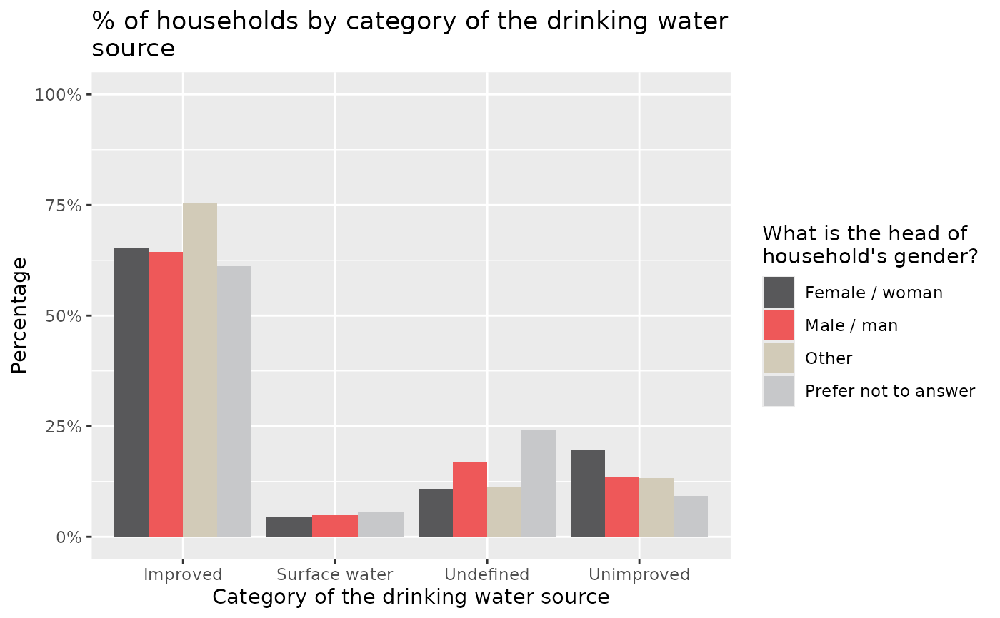

Barplot theme
theme_barplot.Rdtheme_barplot will fill the colors with the palette, put the y-axis to 0 to 100 %
Examples
data_to_plot <- presentresults::presentresults_MSNA2024_labelled_results_table |>
dplyr::filter(
analysis_var == "wash_drinking_water_source_cat",
group_var == "hoh_gender"
)
data_to_plot %>%
ggplot2::ggplot() +
ggplot2::geom_col(ggplot2::aes(x =label_analysis_var_value,
y = stat,
fill = label_group_var_value),
position = "dodge") +
ggplot2::labs(title = stringr::str_wrap(unique(data_to_plot$indicator),50),
x = stringr::str_wrap(unique(data_to_plot$label_analysis_var),50),
fill = stringr::str_wrap(unique(data_to_plot$label_group_var),20)) +
theme_barplot()
